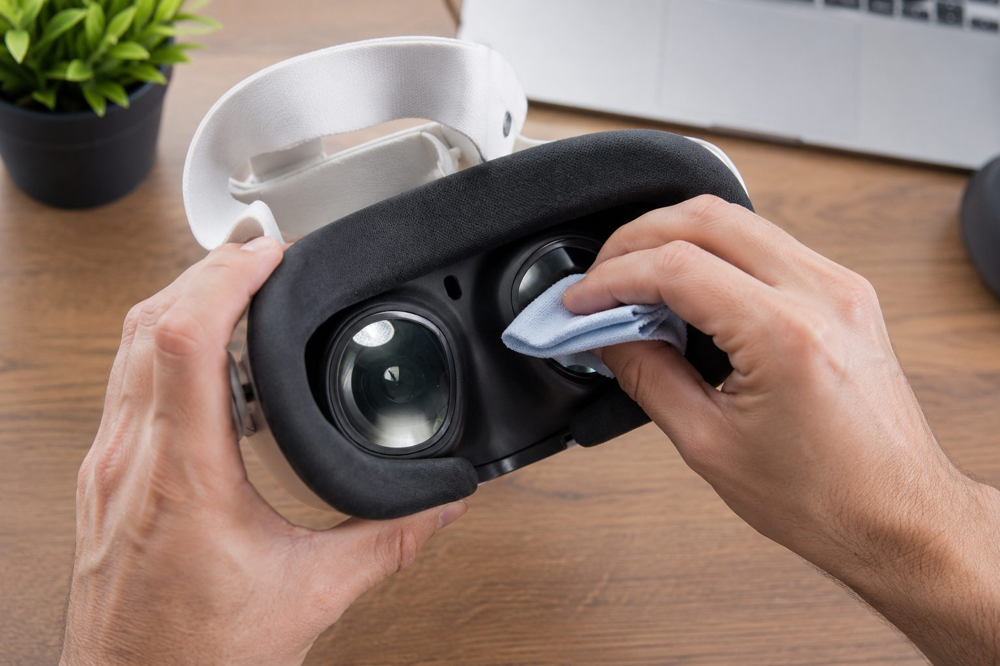

How to clean Meta Quest 3 lenses without ruining them

Use a clean, dry optical microfiber cloth and wipe each lens in small circles, from the center outward. Nothing else should touch the lenses: no water, no alcohol, no lens spray, no wipes. That's Meta's instruction for the Quest 3, and it's stricter than what you'd do with your glasses.
Step by step
- Get loose dust off first. A gentle puff of air is enough. Dragging a grain of grit across the lens is how most scratches happen.
- Use a clean cloth. An optical microfiber, like the ones sold with glasses or camera gear. A cloth that has been in your pocket or used on your phone already carries oil, and it will smear it around.
- Wipe in small circles from the center to the edge, with almost no pressure.
- Check the lens against a light. If a mark is still there, repeat with a clean part of the cloth.
Hold the headset by the frame rather than the lenses, and give them a quick dry wipe after each session so grime doesn't build up.
What never goes on the lenses
- Water or any other liquid. Meta's Quest 3 safety hub says liquids, including cleansers and soaps, can permanently damage the lenses.
- Alcohol, glass cleaner, lens spray or disinfectant wipes. According to Meta, chemical cleaners can damage the lenses' protective coating.
- Anti-fog wipes or sprays. Meta's guide to lens fogging rules them out too.
- Paper towels, tissues or your shirt. They can scratch the coating.
You'll find guides, and even a general Meta help article, saying a slightly damp cloth is fine. Meta's pages about the Quest 3 lenses specifically say dry only. These lenses aren't something you can easily replace, so we go with the stricter rule.
When a smudge won't come off
It's almost always oil, and the usual culprit is the cloth: a used microfiber spreads oil instead of lifting it. Switch to a clean one, or hand-wash yours with mild soap and no fabric softener, and let it dry completely. A lot of people breathe on the lens to help. That's still moisture, and Meta's Quest 3 guidance says dry only, so we don't recommend it.
The damage no cleaning can fix: sunlight
The Quest 3 lenses concentrate light like a magnifying glass. If direct sunlight reaches them, they focus it onto the displays behind them and can damage them permanently. Meta says less than a minute is enough, even indoors through a window.
So the headset lives in its case or with a lens cover on, never facing a window and never on a car seat. Meta also says not to use it outdoors.
Cleaning the facial interface
The foam that rests on your face soaks up sweat and oil. Meta's care instructions: after each use, wipe it with a dry microfiber cloth. For a deeper clean, take it off the headset and hand-wash it with cool water and a mild liquid detergent, without soaking it. No alcohol or chemical cleaners. Let it air-dry completely before putting it back.
If you share the headset or sweat a lot, a silicone cover is worth it: it wipes clean in seconds and doesn't absorb sweat. It's in our Quest 3 accessories guide.
If the lenses are already scratched
No cleaning takes a scratch out of the coating, and home tricks like toothpaste only make it worse: toothpaste works by sanding. If a scratch bothers you while playing, the only real fix goes through Meta support.
Recommended gear
Microfiber cloth → Lens cover → Silicone facial interface (AMVR) →
Answer 7 quick questions and get a personalized match in 60 seconds.
Take the VR Finder quiz →Some links on vr.ar are affiliate links: if you buy through them we may earn a commission at no extra cost to you, which helps keep vr.ar free. Links to Amazon are plain searches and earn us nothing. Prices and specifications are subject to change. See our Privacy Policy.